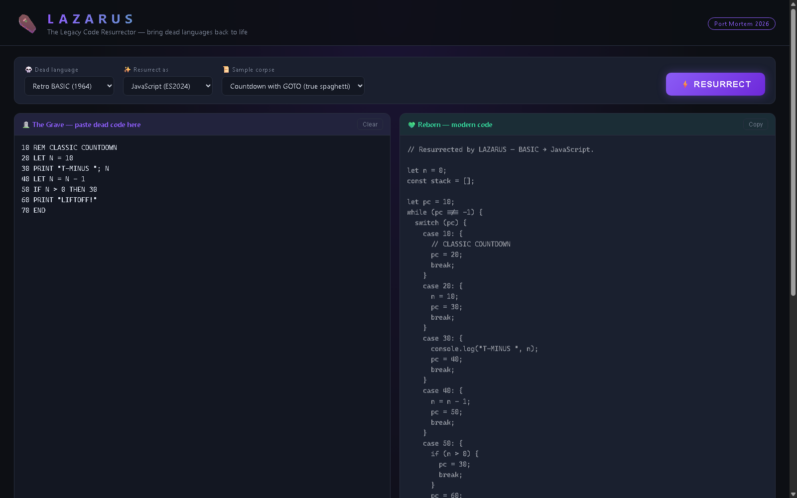
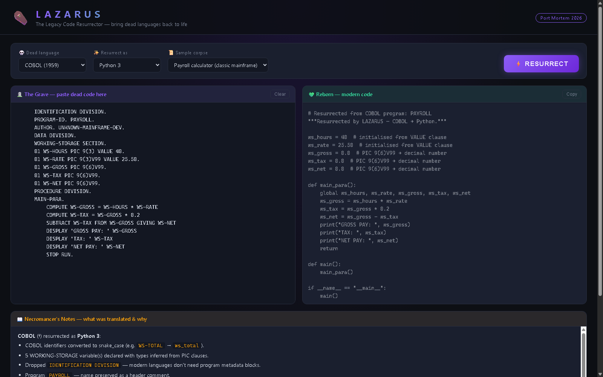
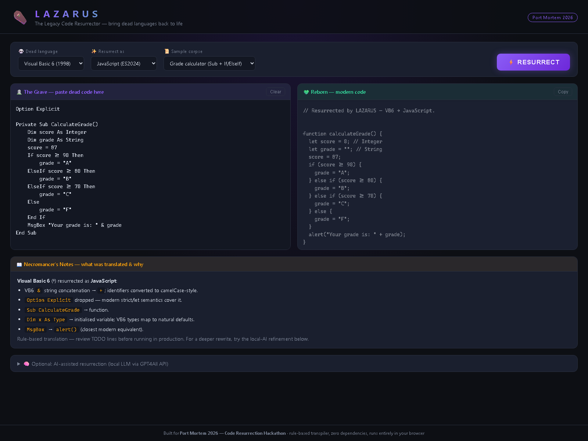
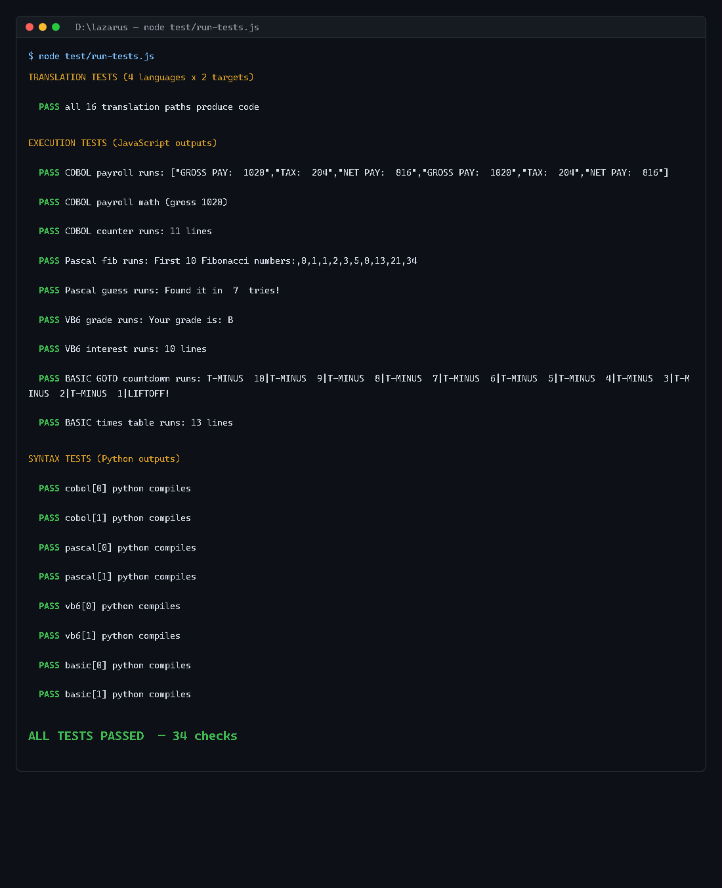

⚰️ LAZARUS — The Legacy Code Resurrector
Screenshots · Live App · GitHub · by Suryandu Ganguly

GOTO resurrection — spaghetti BASIC rebuilt as a program-counter state machine in JavaScript

1959 COBOL payroll → modern Python 3, with line-by-line “Necromancer's Notes”

Visual Basic 6 grade calculator resurrected as JavaScript

Execution-verified — the test harness runs the generated code and asserts on real output: 34/34 checks passed